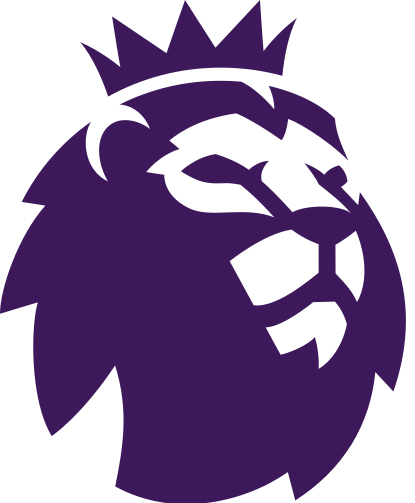
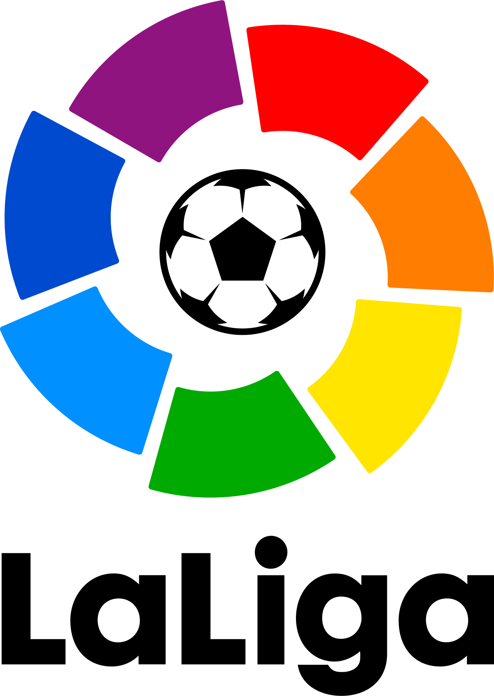
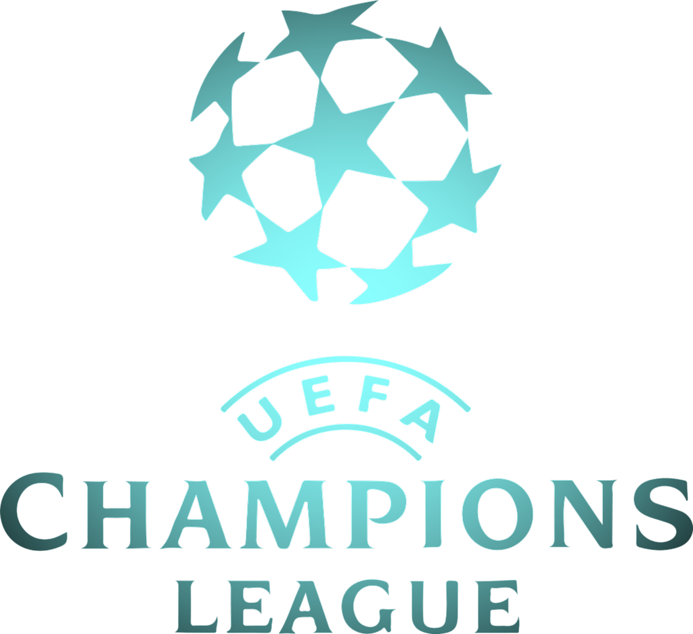
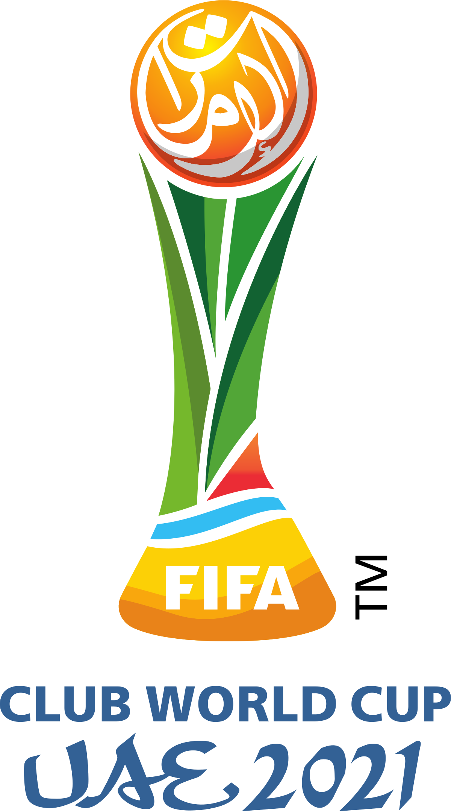
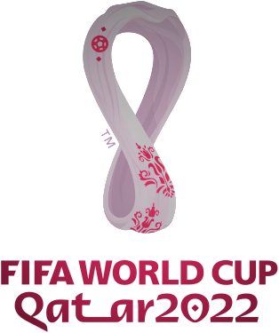
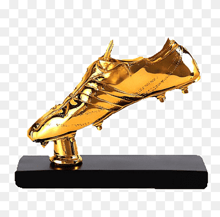

Home
Leagues
 English premier league
Bundesliga
 La liga santander
National Teams
Cups
African cup of nations
 Champions league
Euro Cup
 Clubs world cup
Legends
Events
 Fifa 2022 World Cup Draw
 Golden boot award
About us
National Teams
Here's a berif of some of national teams in their prime:
Brazil
Brazil is the most successful national team in the FIFA World Cup, being crowned winner five times: 1958, 1962, 1970, 1994 and 2002. The Seleção also has the best overall performance in the World Cup competition, both in proportional and absolute terms It is the only national team to have played in all World Cup editions without any absence nor need for playoffs, and the only national team to have won the World Cup on four different continents: once in Europe (1958 Sweden), once in South America (1962 Chile), twice in North America (1970 Mexico and 1994 United States), and once in Asia (2002 Korea/Japan). Brazil is also the most successful national team in the now-defunct FIFA Confederations Cup, being the winner four times: 1997, 2005, 2009, 2013. Brazil has many rivals due to its successes, with notable rivalries with Argentina—known as the Superclássico das Américas in Portuguese, Italy—known as the Clássico Mundial in Portuguese or the World Derby in English,Uruguay due to the traumatic Maracanazo, France due to the fact that they usually have difficulties against France in World Cups, the Netherlands due to several important meetings between the two teams at World Cups, and the style of play of the two teams being considered similar, and Portugal due to shared cultural traits and heritage, as well as the large number of Brazilian-born players in Portugal.
Some of their legend teams and players
For more Information..
Italy
Italy is one of the most successful national teams in the history of football and the World Cup, having won four titles (1934, 1938, 1982, 2006) and appearing in two other finals (1970, 1994), reaching a third place (1990) and a fourth place (1978). Italy also won two European Championships (1968, 2020), and appeared in two other finals of the tournament (2000, 2012). Italy's team also achieved a third place at the FIFA Confederations Cup in 2013 and at the UEFA Nations League in 2021. Italy became the first team to defend its World Cup title, and due to the outbreak of World War II, retained the title for a further 12 years. Italy had also previously won two Central European International Cups (1927–30, 1933–35). Between its first two World Cup victories, Italy won the Olympic football tournament (1936). After the majority of the team was killed in a plane crash in 1949, Italy obtained poor results in the 1950s, even failing to qualify for the 1958 World Cup. Failure to qualify for the World Cup did not happen again until the consecutive editions of 2018 and 2022. The team was unbeaten from October 2018 to October 2021, and holds the world record for most consecutive matches without defeat (37).Italy has notable rivalries with other footballing nations, such as Brazil, Croatia, France, Germany and Spain. In the FIFA World Rankings, in force since August 1993, Italy has occupied the first place several times, in November 1993 and during 2007 (February, April–June, September), with its worst placement in August 2018 in 21st place.
Some of their legend teams and players
For more Information..
Egypt
Egypt has qualified for the FIFA World Cup three times: in 1934, in 1990 and for the 2018 editions. Egypt was the first African country to qualify for the World Cup.In 2017, Egypt set a new record of 24 consecutive Africa Cup of Nations matches played without defeat, dating back to their last tournament appearance in 2010. During this run, Egypt also reached a record nine consecutive wins in AFCON matches after beating Ghana in the 2010 final, while becoming the first team to win three consecutive AFCON titles.
The unbeaten run came to an end on 5 February 2017,after Egypt lost 1–2 to Cameroon in the 2017 final.
Egypt is the most successful national team in the Africa Cup of Nations, being crowned winner seven times:
1957, 1959, 1986, 1998, 2006, 2008, 2010.
Some of their legend teams and players
For more Information..